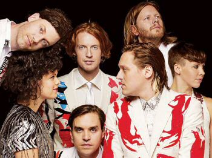
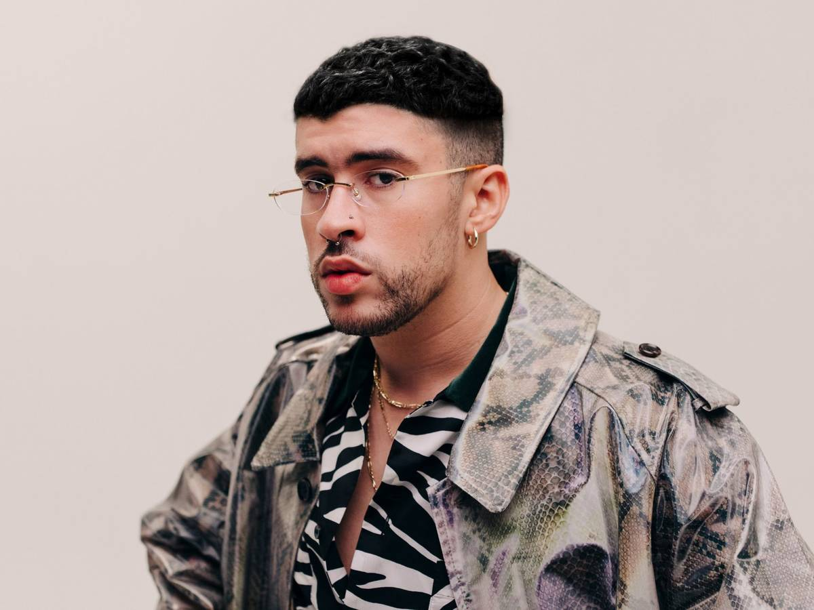
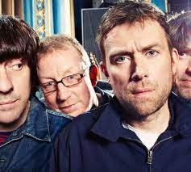
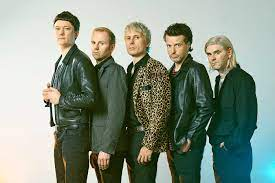
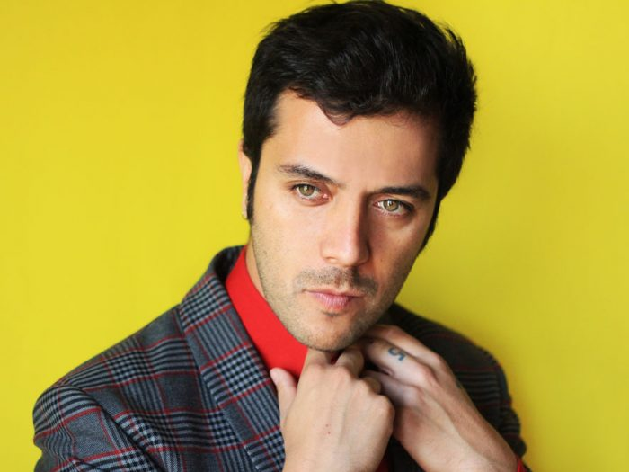
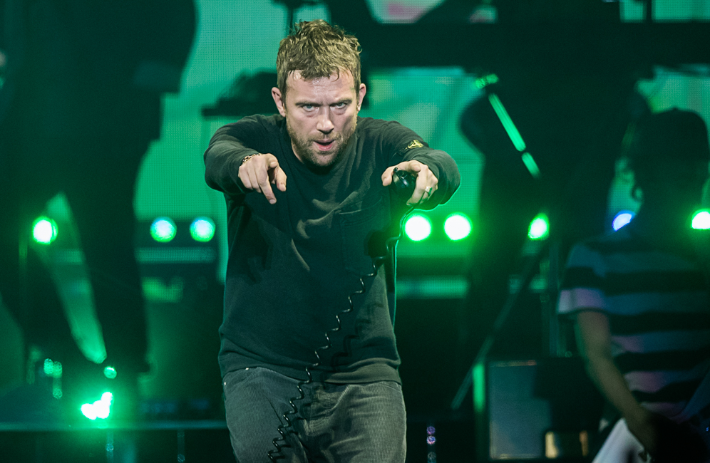
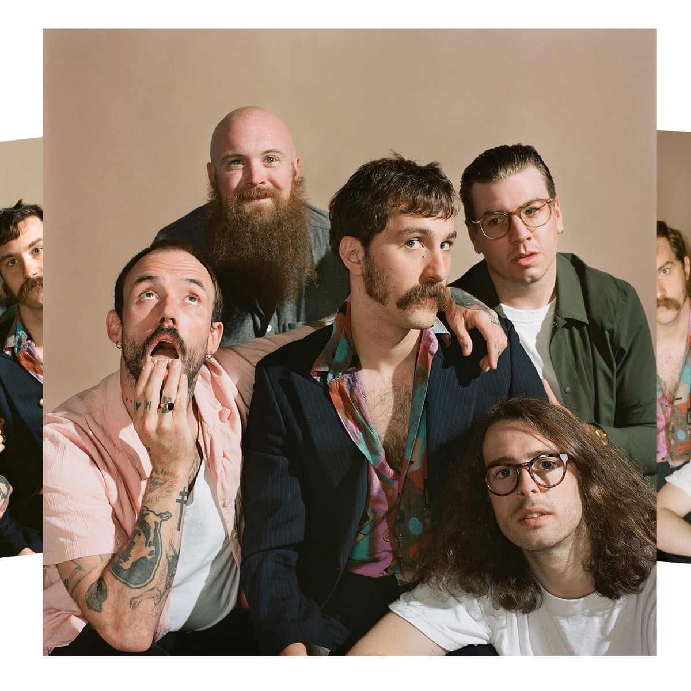
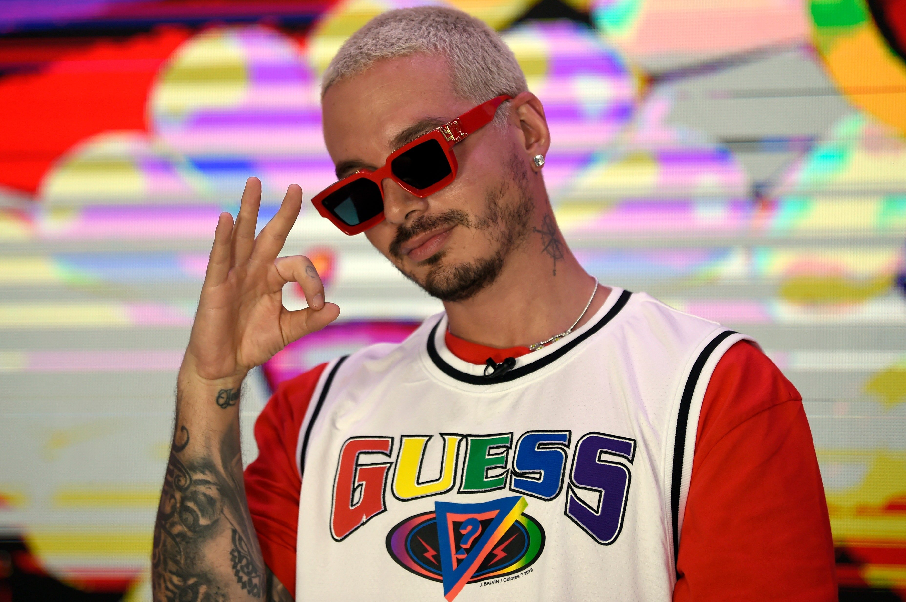
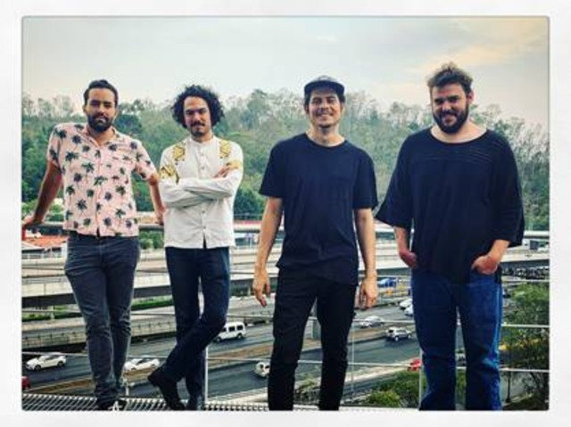

Arcade Fire
Arcade Fire es un grupo de indie rock surgido en Montreal, Canadá, conformado por Win Butler y Régine Chassagne, marido y mujer, William Butler, hermano de Win, Richard Reed Parry, Tim Kingsbury y Jeremy Gara.
Fuente: Wikipedia Bad Bunny
Benito Antonio Martínez Ocasio, más conocido por su nombre artístico Bad Bunny, es un rapero, cantante y compositor puertorriqueño. Su estilo de música es generalmente definido como trap latino y reggaeton, pero también incorporó otros géneros como rock, bachata y soul.
Fuente: Wikipedia Blur
Blur es un grupo británico de britpop formado en 1988 en la ciudad de Londres, Inglaterra bajo el nombre de Seymour. La banda está integrada por el vocalista, tecladista y guitarrista Damon Albarn, el guitarrista y vocalista Graham Coxon, el bajista Alex James y el baterista Dave Rowntree.
Fuente: Wikipedia Franz Ferdinand
Franz Ferdinand es una banda de indie rock, formada en Glasgow, Escocia, en 2001. La banda está compuesta por Alex Kapranos como voz principal, guitarra solista y teclados, Bob Hardy en el bajo, Nick McCarthy en la guitarra rítmica, teclados y coros y Paul Thomson en la batería, percusión, guitarra y coros.
Fuente: Wikipedia Gepe
Daniel Alejandro Riveros Sepúlveda, conocido como Gepe, es un músico, compositor y multiinstrumentista chileno.
Fuente: Wikipedia Gorillaz
Gorillaz es una banda virtual británica creada en 1998 por Damon Albarn y Jamie Hewlett. La banda está compuesta por cuatro miembros ficticios: 2-D, Noodle, Murdoc Niccals y Russel Hobbs.
Fuente: Wikipedia Idles
Idles es una banda de rock inglesa, formada en Bristol en 2009. Su álbum debut Brutalism fue lanzado en 2017.
Fuente: Wikipedia J Balvin
José Álvaro Osorio Balvín, conocido como J Balvin, es un cantante y productor discográfico colombiano, que ha logrado posicionarse tanto en el mercado musical hispano como en el mercado musical de habla inglesa, llegando a colocar sus temas en número uno en varias listas musicales, entre ellas Billboard.
Fuente: Wikipedia Porter
Porter es una banda de rock mexicana que se formó en Guadalajara, Jalisco, en 2004, y que se separó temporalmente en octubre de 2008. Conformados por: Fernando de la Huerta, Diego Bacter Rangel, David Velasco y Víctor Valverde.
Fuente: Wikipedia The Strokes
The Strokes es una de las bandas de rock mas representativas en la escena rock de Nueva York, Fue formada en 1998 por el vocalista de la banda Julian Casablancas.
Fuente: Wikipedia